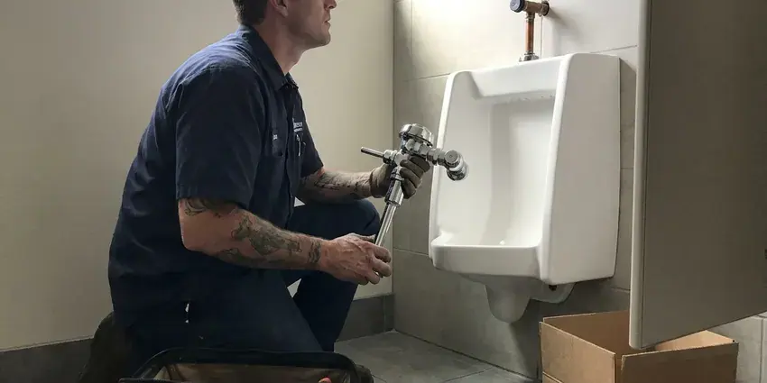

Sink Repair in Sioux City, IA
If your sink is acting up in your Sioux City, IA home, KFR Plumbing offers prompt and reliable repair service.
- Same-Day Sink Repair Visits
- Transparent Pricing
- Licensed Iowa Plumbers
- Quick Local Service

Need Your Sink Repaired Fast in Sioux City, IA?
Don't let a leaky or clogged sink disrupt your day, contact KFR Plumbing for prompt service.
Sink Repair Done Right the First Time in Sioux City, IA
When your sink is acting up in Sioux City, IA, KFR Plumbing provides the reliable repair services you need. Our plumbers are experienced in tracking down and fixing problems with kitchen sinks, bathroom sinks, utility sinks, and more. We use quality parts and proven techniques to deliver lasting repairs.
Our expertise includes:
- Repairing garbage disposal issues.
- Repair or swap pop-up stoppers and clogged overflow channels
- Clearing tough sink clogs.

Additional Bathroom Plumbing Services in Sioux City, IA
From toilets to showers, our bathroom plumbing team in Sioux City, IA handles repairs, installs, and upgrades with tidy, code-compliant work.


Customers
Why Choose KFR Plumbing for Sink Repair in Sioux City, IA?
Water softeners are a common upgrade in Iowa homes, helping protect tank water heaters, faucets, and appliances from mineral damage. Our plumbers know how water quality and heat age sink parts in Iowa homes, and that experience means quicker diagnosis and repairs that hold up.
- Quality Parts, We use durable, high-quality replacement parts for all repairs, providing reliability and longevity for your sink.
- Clean Work, We protect the vanity and countertop and remove old parts.
- Local Knowledge, We are well versed in common plumbing issues in Sioux City, including those related to local water quality and building codes.
Citywide Coverage
We repair bathroom sinks in every part of Sioux City, from older homes with galvanized stubs to newer builds with PEX and plastic traps. Wherever you live in town, a plumber can often reach you the same day.
Experienced Team
The technicians at KFR Plumbing are not only skilled but also regularly trained on the latest plumbing techniques and diagnostic tools for sink repair. This training guarantees a professional and accurate solution for your home in Sioux City, IA.
Safety-First Approach
Old drains can hide sharp corroded edges and mold behind the vanity, so we work with care and point out anything unsafe. All replacement parts are lead-free and rated for potable water where needed.
Trusted Certified Sioux City Plumbing Services Professionals
At KFR Plumbing, we take pride in providing licensed, certified plumbing services throughout Sioux City, IA. Backed by recognized industry credentials, our experienced plumbers combine technical skill with genuine customer care. Whether it is repair, installation, or maintenance, we follow strict safety and quality standards to deliver long-lasting results you can trust.
Call Us Now PHCC Plumbing Contractor Recognition
PHCC Plumbing Contractor Recognition Better Business Bureau (BBB) Accreditation
Better Business Bureau (BBB) Accreditation Angi Certified Pro
Angi Certified Pro ISO 9001 Quality Management Certification
ISO 9001 Quality Management CertificationReliable Sink Repair Services in Sioux City, IA
Fixing Loose or Wobbly Sinks in Sioux City
Over time, sinks can become loose or wobbly, particularly if they are undermounted or pedestal styles. This can be due to failing caulk, loose mounting clips, or even issues with the countertop. Our plumbers in Sioux City can re-secure your sink, ensuring it's stable and properly sealed to prevent water infiltration and further damage to your cabinetry or flooring.

Commercial Sink Repair in Sioux City
Businesses in Sioux City rely on functional sinks for hygiene and operations. Whether it's a restaurant kitchen, a salon, or an office breakroom, a broken sink can stall productivity. We offer fast and efficient commercial sink repair services, understanding the urgency of getting your business back to full operation with minimal disruption. We handle heavy-duty commercial fixtures and complex plumbing systems.
Pop-Up Drain and Stopper Repair in Sioux City, IA
When the stopper will not close, will not open or lets water slowly escape, the pop-up linkage is usually to blame. The pivot rod nut can leak, the clevis strap can slip, and hair wraps around the stopper body. We clean or replace the assembly and adjust it so the lift rod works freely. If the drain body itself is corroded, we replace it with a matching finish.
Overflow and Drain Body Leak Repair in Sioux City, IA
Water that appears only when the sink is full often comes from the overflow gasket or the drain flange putty. We pull the drain, clean the old putty or sealant, and reset the flange with fresh plumber's putty or silicone based on the basin material. Then we fill the bowl past the overflow and check for drips. This kind of leak is easy to miss and easy to fix once we find it.
Sink Parts Replacement in Sioux City, IA
Sometimes, a full sink replacement isn't necessary; only specific parts need attention. KFR Plumbing offers targeted sink parts replacement services in Sioux City, IA, including P-traps, supply lines, aerators, strainers, and pop-up stoppers. We use high-quality, durable components that match your existing fixtures and meet all local plumbing codes. This targeted approach saves you money and extends the life of your current sink, making it a cost-effective repair solution.
Emergency Sink Leak Repair in Sioux City
A burst supply line or a broken trap can put gallons on the floor in minutes. If you cannot stop the water at the angle stops, shut off the main and call us. We prioritize active leaks and carry the parts to stop them on the first visit. We also check the vanity floor and wall for moisture so damage does not spread.
Outdoor Sink Repair in Sioux City
Outdoor sinks, commonly found in utility areas, garages, or outdoor kitchens, are exposed to different elements and usage patterns. Frost goes deep into the ground across Iowa, so water and sewer lines must be buried safely below the frost line. They can also develop leaks from sun exposure or fittings that loosen over time. KFR Plumbing repairs issues specific to outdoor sinks, including hose bib leaks, utility faucet malfunctions, and drain clogs from yard debris. We make sure your outdoor plumbing is ready for any season.

Loose or Cracked Basin Repair in Sioux City
Undermount sinks are held by clips and epoxy that can let go, leaving a gap and a leak along the counter. Vessel sinks can rock on a worn mounting ring, and older porcelain basins can crack around the drain. We reattach, reseal or replace the basin as needed and recaulk with a mildew-resistant silicone. We will tell you honestly when a crack means replacement is the better value.
Reliable Sink Repair Near Me in Sioux City, IA
Our commitment to the Sioux City community means we're never far away when you need professional sink repair. We understand the plumbing challenges faced by homeowners in Iowa, providing practical solutions that last. Just give us a call at (515) 308-3583.
When you need a professional plumber for sink repair near me, KFR Plumbing stands out for its commitment to quality and customer service. We understand the plumbing in Sioux City homes and are equipped to handle any sink challenge. Trust us for convenient, expert service.
KFR Plumbing at a Glance
- Fully licensed plumbing team covering Sioux City, IA
- 24/7 emergency service with same-day scheduling
- Upfront, flat-rate pricing before work begins
- 4.8-star rated by 620+ Iowa customers
Sioux City Map
Sioux City Information
- Population
- 85,727
- Area codes
- 712/605/507
- Service area
- Sioux City and communities within 40 miles
- Nearby
- Council Bluffs, Waukee, Ames, Urbandale
Water softeners are a common upgrade in Iowa homes, helping protect tank water heaters, faucets, and appliances from mineral damage. Warm vanity cabinets also wear out sink seals, stoppers and supply lines sooner, so prompt sink repair protects Sioux City, IA homes from hidden cabinet and floor damage.
Expert Services
Trust our professionals for reliable KFR Plumbing solutions in Sioux City, IA.
Our Specialized Plumbing Services in Sioux City, IA
At KFR Plumbing, we provide a complete range of plumbing services across Sioux City, IA. From leak detection to full system installations, our team ensures fast, precise, and affordable service for both residential and commercial properties. Explore our core services below:


How Our Sink Repair Process Works in Sioux City, IA
We follow a clear, step-by-step approach to ensure efficient and effective sink repair for your Sioux City home.
Request a Quote
Start by calling us at (515) 308-3583 or filling out our online form to describe your sink issue. We'll schedule a convenient time for a professional assessment.
Diagnosis & Estimate
Our experienced plumber will arrive at your Sioux City home to thoroughly inspect your sink, diagnose the problem, and provide a clear, upfront estimate for the repair.
Expert Repair
Once you approve the estimate, we'll start the repair using quality tools and parts. We work efficiently to restore your sink's function with little disruption.
Frequently Asked Questions About Sink Repair in Sioux City
Simple fixes like a P-trap, washer or supply line usually run $125 to $250. Pop-up drain replacement or resetting a loose basin typically costs $175 to $400. We quote a flat price before starting.
Generally, minor sink repairs like fixing a leak or replacing a faucet do not require a permit in Sioux City, IA. However, if the repair involves significant alterations to the existing plumbing system, moving drain lines, or replacing entire sections of pipe, a permit may be necessary. We can walk you through any permit requirements.
Persistent sink clogs in Sioux City homes are often caused by a buildup of grease, food particles, soap scum, and hair over time. Water softeners are a common upgrade in Iowa homes, helping protect tank water heaters, faucets, and appliances from mineral damage. Mineral buildup inside pipes can narrow the drain and worsen clog issues, and improper use of garbage disposals can also be a factor.
Yes, our technicians are experienced in repairing all major sink and faucet brands, including Kohler, Moen, Delta, American Standard, Pfister, and more. We carry a broad range of universal and brand-specific parts to ensure a proper and lasting repair for your specific fixture.
Water softeners are a standard upgrade in Iowa homes, helping protect tank water heaters, faucets, and appliances from mineral damage. Hard water leaves scale that stiffens pop-ups, clogs aerators and wears valve seals sooner, and it can etch some sink finishes over time. Regular cleaning and a water softener both help.
We recommend against it. Caustic cleaners can damage older metal traps and rarely clear hair clogs completely. A hand auger and a cleaned stopper work better and are safer.
Absolutely. Even a small, persistent leak under a sink can lead to significant water damage over time, affecting cabinetry, flooring, and even fostering mold growth. A burst pipe or a major overflow can cause immediate and extensive damage, which shows the importance of timely repair in your Sioux City home.
We repair all types of residential and light commercial sinks, including kitchen sinks, bathroom sinks, utility sinks, pedestal sinks, wall-mount sinks, drop-in sinks, undermount sinks, and even outdoor sinks. Our team is equipped to handle issues with various materials, from stainless steel to porcelain and composite.
What People Are Saying About Our Plumbing Experts?

Mark T.
When our office needed drain cleaning, KFR Plumbing provided quick, reliable service. The plumber arrived on time and made sure every drain flowed perfectly before leaving. Very satisfied.
Drain Cleaning · Urbandale, IA
Daniel K.
A pipe burst at 11 pm and they actually answered. The plumber showed up within the hour, shut everything down, and had us back to normal the next morning. Could not ask for more.
Emergency Plumbing · Council Bluffs, IA
Sofia M.
Two new toilets installed in one visit, no mess left behind, and the tech even adjusted a faucet he noticed was dripping. Fair pricing and really friendly.
Toilet Installation · Urbandale, IA
Emily R.
I called KFR Plumbing for plumbing repair, and the technician was fast, polite, and thorough. They explained the problem clearly and fixed it the same day. I will definitely hire them again. Highly recommended!
Plumbing Repair · West Des Moines, IA
Robert G.
The trenchless sewer replacement saved our front yard. They walked us through the camera inspection footage first so we knew exactly what we were paying for.
Sewer Line Replacement · Waukee, IALaura S.
I scheduled a water heater replacement, and the team made the process smooth and affordable. The new unit works perfectly, and they cleaned up after completing the job.
Water Heater Replacement · Urbandale, IA